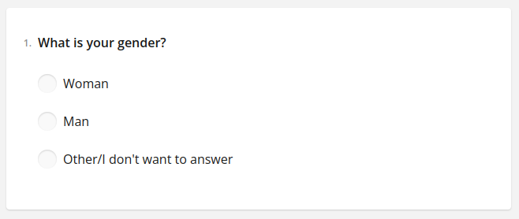
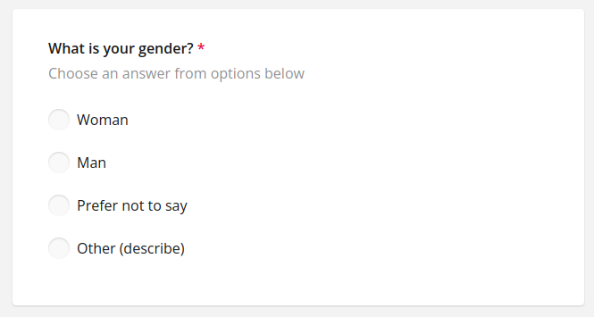
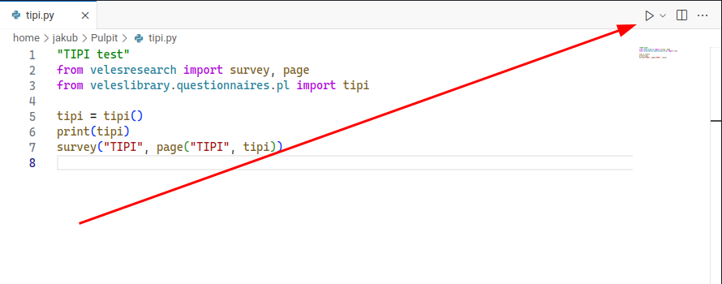
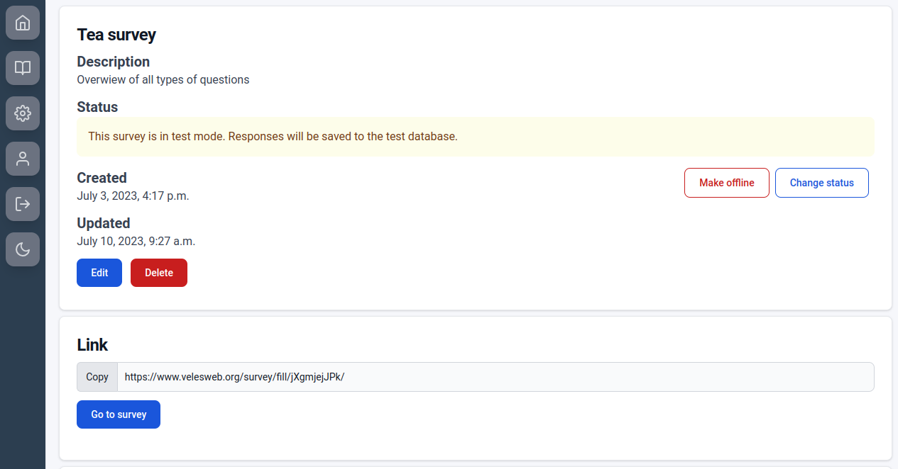

import velesresearch as vlsGetting started
Prerequisites
Veles is a Python library, so before using it, you need to install Python. You can download an installation bundle from the official website. During installation, check the box saying to add Python to PATH. It will enable you to run Python by writing python in the terminal, without the full path. If you’re using Linux or MacOS, you already have Python installed by default.
Using an IDE is recommended. You can use any IDE, but I highly recommend Visual Studio Code. If you want to use it, it’s a good idea to also download Python Extension Pack and Pylance. You can do it from within the program. You can also use RStudio if you want.
Some really basic knowledge how to use Python is recommended. If you know what’s a variable and how to call functions, you’re good to go. If you don’t know anything about programming, this 1-hour introduction will be more than enough (although I think VSCode is better than PyCharm).
To actually build (or even preview) your survey, you must have yarn installed. It’s a JavaScript package manager and is used to download some dependencies like Survey.js and React. yarn gets installed with Node.js. If you’re a Windows user, you can download it from the official website. MacOS comes with Node.js preinstalled. If you’re a Linux user, chances are you have npm already installed. Otherwise you can use one of the following commands:
# Ubuntu (and other apt distros)
sudo apt install npm
# Arch
sudo pacman -S npm
# winget
winget install OpenJS.NodeJS.LTS
# Chocolatey
choco install nodejs-lts
# Homebrew
brew install nodeIf everything is OK you should be able to run this command in your terminal (PowerShell or cmd in Windows):
npm -vfter installing node.js, activate yarn with this command in the terminal:
corepack enableIf everything went well, command yarn -v should return a version number.

yarn -v in Linux terminal
yarn -v in Linux terminalInstallation
To install Veles, open your terminal (PowerShell or cmd on Windows), write the following command and hit enter.
pip install velesresearchYou can also choose development version (unstable) using this command:
pip install velesresearch@git+https://github.com/jakub-jedrusiak/VelesResearch.gitCreate project
Veles project is just a folder with a Python script. Output will be created in the same folder. Create a folder and open it in Visual Studio Code. From inside VS Code you can create a file with .py extension. It it, we’ll be writing the survey structure.
The first thing we need to do is to import the velesresearch library. To do this, at the top of your script write:
Survey structure
In SurveyJS, which is the base of Veles, surveys consist of pages, panels and questions. We can create them separately and then combine them into a complete survey.

Veles is a Python library, so there are many ways to achieve this in practice. We can put things in separate variables and then combine them or nest appropriate functions. In here I’ll mainly be using the first approach.
Questions
In Veles, questions are a class of objects. There are two main ways of creating them – separately or when we want to convert a whole questionnaire at once. In both cases we use the question() function.
question()
Let’s start with creating some metrical questions with question(). The syntax is as follows:
vls.question(label, question_text, answers, question_type, options, description)The first four arguments are required. label is an internal name of the question. It will become a column name in the database. Question type is a string representing one of the available question types. question_text is what the participant actually sees as an item in the survey. answers are the options the participant can choose. It can be a list or strings separated by commas. question_type defaults to "radio". options can change the survey’s behaviour (e.g. make the answer order random), but I’ll provide more details later. description look like a subtitle. Both options and description arguments must be named if used (i.e. you need to write options=).
gender = vls.question(
"gender",
"What is your gender?",
"Woman",
"Man",
"Other/I don't want to answer",
description="Choose an answer from options below.",
)
Every question type has its own wrapper functions, so we could also write gender = vls.radio("gender", "What is your gender?", ...). A complete list of available question types can be found here.
Question options
Each question can have a series of options specified. To make it easier, there’s QuestionOptions object class which has all available options listed. Let’s use it to change answer order to random and add real None and Other options. We can create QuestionOptions outside the question itself, save it in a variable and put the variable in the question() function. We can also nest the QuestionOptions object inside the question() function.
gender = vls.question(
"gender",
"What is your gender?",
"Woman",
"Man",
options=QuestionOptions(
answers_order="random",
none=True,
none_text="I don't want to answer",
other=True,
other_placeholder="Write your gender.",
),
description="Choose an answer from options below.",
)
List of available options can be found here.
Whole questionnaires
Often in behavioral sciences we want to use a whole questionnaire. It’s quite pointless to format every item separately, because they often have the same scale, options and predictable labels. In Veles the question() also allows to convert a whole questionnaire at once.
To do this, we need to have the questionnaire in the form of a Python list. We can format it either by hand, using split() method or with split arguments. In the second and third cases, we need to have our items separated by some common separator, e.g. every item in a separate line. Both methods are shown below
# manually formatted list
RSSI_items = [
"I feel that I am a person of worth, at least on an equal plane with others.",
"I feel that I have a number of good qualities.",
"All in all, I am inclined to feel that I am a failure.",
"I am able to do things as well as most other people.",
"I feel I do not have much to be proud of.",
"I take a positive attitude toward myself.",
"On the whole, I am satisfied with myself.",
"I wish I could have more respect for myself.",
"I certainly feel useless at times.",
"At times I think I am no good at all.",
]
# triple quotation for multi-line strings
RSSI_items = """I feel that I am a person of worth, at least on an equal plane with others.
I feel that I have a number of good qualities.
All in all, I am inclined to feel that I am a failure.
I am able to do things as well as most other people.
I feel I do not have much to be proud of.
I take a positive attitude toward myself.
On the whole, I am satisfied with myself.
I wish I could have more respect for myself.
I certainly feel useless at times.
At times I think I am no good at all."""
# scale
RSSI_scale = "Strongly Agree; Agree; Disagree; Strongly Disagree"
RSSI = vls.question(
"RSSI",
RSSI.split("\n"),
RSSI_scale.split("; "),
options=QuestionOptions(required=True),
)The """ allows us to write multiple line strings.
We save our items and answers in variables and treat them with split(). In here I’ve done it inside the question() function, but I also could have done it anywhere before that. To learn more about Python string methods, see W3Schools lesson about them. Had I used the manually formatted list, I wouldn’t have to write the split() part.
If question_text is a list, question() output is a list of questions. Each question in the list have the same options, scale and type. The labels will become "RSSI_1", "RSSI_2", "RSSI_3" etc.
List comprehension
The power of Python allows us to bulk modify our questions and answers. This might be the greatest advantage Veles has over its GUI-based1 alternatives. Let’s imagine we have a list of drinks we want to ask about in our survey. Yet we don’t want the question text to be just “Tea” or “Coffee” (especially coffee) but rather something like “How do you feel about tea?”. English being fairly uncomplicated, we just need to put the drink’s name into the sentence. We can easily use a loop and an f-string to do just that.
from velesresearch import question
# get our drinks and make them a list
drinks = "tea coffee juice water".split(" ")
# modify with a loop
drinks = [f"How do you like {drink}?" for drink in drinks]
# add some answers
answers = "I love it; I like it; It's OK; I don't like it; I despise it".split("; ")
# make it a list of questions
q_drinks = question("drinks", drinks, answers)First we get our drinks separated with some common separator (a space in this example). We then split it and save it in a drinks variable. After that we modify it with an f-string and a for loop. An f-string is a string preceded with an f. Inside it, we can use variables’ values if we enclose them in curly braces. After the f-string we put a shorthand loop syntax (it’s called list comprehension). It will take every value inside the drinks one by one, put them in a variable called drink2 and do whatever we commanded before the for keyword. When it’s done with the first value, it saves the result and moves on to the next drink until the list ends. Notice everything is in square brackets. We then overwrite the drinks variable with the newly created list.
Questionnaire library
Veles has it’s own (currently small) questionnaire library. Thanks to it, you can quickly add a whole questionnaire with only one command. The library is available in the veleslibrary package. To use it, you need to install and import it first.
# In the terminal
pip install veleslibraryfrom veleslibrary.questionnaires import rse
survey("self_esteem_survey", page("RSE", rse())) # Rosenberg Self-Esteem ScaleLibrary is multilingual.
from veleslibrary.questionnaires.pl import tipi
survey("personality", page("TIPI", tipi())) # TIPI in PolishGo here to read more about the library. Feel free to contribute to the library by adding your own questionnaires. More information here.
Panels
To be implemented…
Pages
Every survey needs to have at least one page. Page is basically a list of questions but with its own label, title, description and options. You can create it with page().
vls.page(label, questions, title, description, options)Pages have their own labels. They don’t yet have many uses in Veles but are still mandatory for SurveyJS compatibility reasons. Questions can be provided as a list or values separated by commas. You can also provide page’s title and description. The options argument accepts a PageOptions object. These are different options than in QuestionOptions. The list of available options can be found here.
intro = vls.page("metrics", gender)
limit = vls.PageOptions(time_limit=120)
self_esteem = vls.page("RSSI", RSSI, options=limit)Survey
When all elements are created, we can combine them into the final survey. We can do this with survey() function. It does two things – returns a Survey object and builds a website with your survey.
vls.survey(label, pages, title, description, options, create)vls.survey("My smart research", intro, self_esteem, title="Self-esteem and gender")Building a website for the first time might take a few minutes due to yarn downloading or updating JavaScript dependencies. When the dependencies have been downloaded, the whole process gets much faster. The structure of the generated files and what to do with them is explained in Hosting section below.
PsychoJS experiments
To be implemented…
How to run your script
After writing your survey, you need to build it. Don’t worry, it all happens automatically. Just run your script with Python and wait for the website to be built. It might take a few minutes the first time, but after that it will be much faster. How do we run a python script? There are many ways to do this. If you use Visual Studio Code, there’s a “Run” button in the upper right corner. Just click it and see if the console prints any errors.

If everything went well, you should have a folder named like your survey’s label. Inside there will be a series of files and folders. The most important one is the .tar.gz file. It’s an archive with all the files needed to host your survey. You can upload it to VelesWeb. If you want to host the survey yourself, the most important part of the package will be the build folder where you can find the built webpage. The structure of the files is explained more broadly in Hosting section below.
Hosting
The main way to host Veles surveys is through VelesWeb. Currently in closed alpha. Veles isn’t meant to be a commercial product so even if VelesWeb will get some restrictions and paywalls (it mostly depends on the maintenance costs), there will always be an alternative. You can host your surveys yourself.
VelesWeb
When you generate a Survey, you get a folder with a series of files. Their structure is not that important if you intent to use VelesWeb. The only file that will be interesting, is the archive with .tar.gz extension.
Log in to your VelesWeb account, create a new survey, give it a title and – optionally – a description. Then choose the .tar.gz file from your hard drive. Submit and wait. It might take a minute or two. After that you’ll see your survey’s overview.


From here you can test the survey, make it offline or turn on the real data collection. Each survey has two databases – the main one and the test one. The test mode is the default. As you can see below, responses collected in both modes are separated. This makes it easier to test your survey without worrying about messing up the data.
Self-hosting
If we want to manage our surveys ourselves, we need a place to host them and a place to store the results. Luckily there are free methods to do both. In here we’ll use Vercel for hosting and MongoDB Atlas for storing the results. Additional benefit of self-hosting is that we can use our own domain name e.g. create a special subdomain in our university’s domain (like surveys.uwr.edu.pl). That is if someone will give us access to the DNS settings.
Configuration
Go to VelesSurvey for Vercel GitHub repository. Click on “Use this template” button. Give your repo a name and confirm with “Create repository from template” button. Of course you need to be logged into your GitHub account.
Go to Vercel, create an account and from there start a new project. Link the project to your newly created GitHub repo.
Don’t change the default deployment settings but do click on
Enviroment variables. Add a new variable namedSECRET_KEYwith a value generated with this website and confirm with “Add” button. If you plan to use a custom domain, you can also add aDOMAIN_NAMEvariable with a value like.uwr.edu.plto match all subdomains ofuwr.edu.pl. Don’t worry, if you don’t know yet. You can always add it later. You can read more about custom domains here.

When the building process ends, you can visit your page. It’s just a white screen with a moving Veles logo. By design, there’s no survey list on the main page. It helps keeping everything confidential.
Not only we need a place to collect our responses, but also somewhere to store them. For this purpuse we’ll use MongoDB and its free 512 MB of space. My rough calculations say it will allow us to collect around 1 600 000 responses before the space runs out. I wish everyone this kind of probe sizes. Go to MongoDB, create a free account and then a free cluster. The website will take you through the whole process.
Now we need do connect Vercel and MongoDB. You can do it on this website. Click “Add integration” and go with the forms. It will make some needed security changes to your MongoDB cluster, so the answers can be sent from Vercel app to the database.
That’s it. Test your application by going to
/tea_surveyin your Vercel app (e.g.https://tea-research-project.vercel.app/tea_survey/). You should see a survey with a series of questions about tea. When you complete it, you should see a new response in your database.
Using
When you create a survey with Veles, you get a folder with a series of files. The most important one is main.js from build subfolder. To add it to your site, you need to create a new subfolder in the surveys folder in your repository. The easiest way to do it it through GitHub Desktop. Use it to download (or “clone”) your repository and create a new folder inside the surveys folder. The name of that folder will become a link to your survey, e.g. if you name it black_tea_study, the link will be something like https://tea-research-project.vercel.app/black_tea_study. Then put your main.js in your newly created folder. Do not rename it. Then use GitHub Desktop to upload (or “push”) your changes. After a minute or so, your survey should be available.
To read and save your data you can use web desktop on mongodb.com or with a special program called MongoDB Compass. After any responses are recieved (even for the tea survey), a new database called VelesResponses is created. Every survey gets its own folder (or “collection”). From there you can easily export your data to .csv or .json.